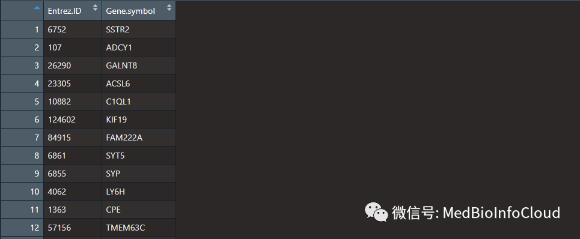
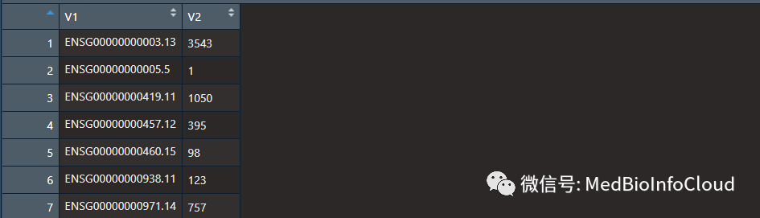
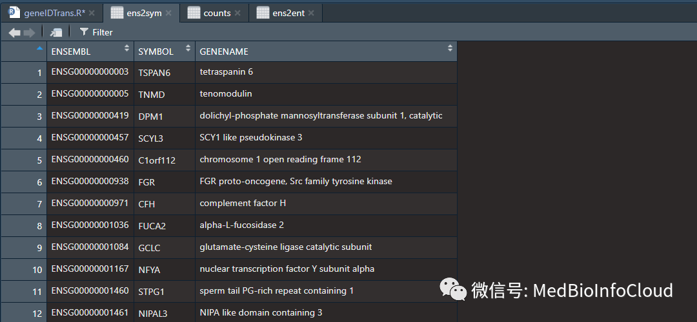
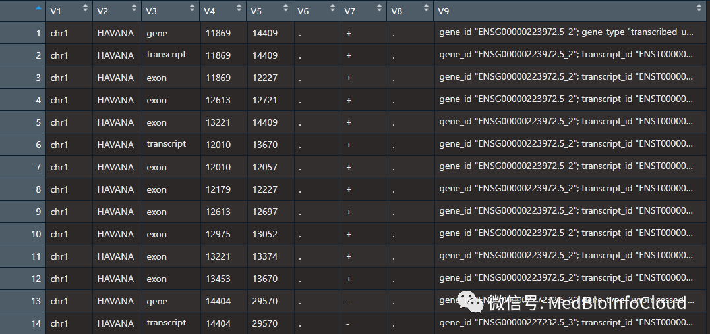
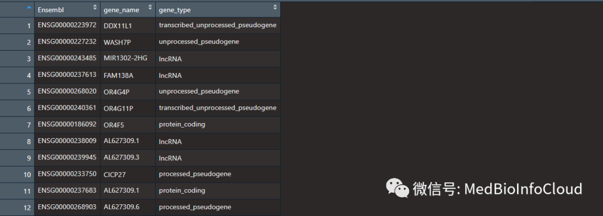

生信中各种ID转换¶

我在文章常用生物信息ID的介绍中介绍了常见的ID，也提到一些常见的ID转换工具。
1.Uniprot ID mapping 可以很方便地把 ID 转换为其他 ID 类型, 所包含的类型十分全面【https://www.uniprot.org/uploadlists/】
2.bioDBnet 网站提供了常见的 ID 转换的选项, 类型全面【https://biodbnet-abcc.ncifcrf.gov/】.
3.DAVID Gene ID Conversion Tool 可以把 Gene ID 转换为多种常用类型和 DAVID ID, 方便进一步用 DAVID 做 GO 分析，常做富集分析的同学估计常用到这个工具【https://david.ncifcrf.gov/】。
4.sangerbox：http://sangerbox.com/IdConversion
5.biomart工具：http://www.biomart.org/
6.FunRich软件，在我之前的文章就有介绍，FunRich数据库：一个主要用于基因和蛋白质的功能富集以及相互作用网络分析的独立的软件工具。
还有org序列的R包
1 org.Ag.eg.db Anopheles aga eg
2 org.At.tair.db Arabidopsis ath tair
3 org.Bt.eg.db Bovine bta eg
4 org.Ce.eg.db Worm cel eg
5 org.Cf.eg.db Canine cfa eg
6 org.Dm.eg.db Fly dme eg
7 org.Dr.eg.db Zebrafish dre eg
8 org.EcK12.eg.db E coli strain K12 eco eg
9 org.EcSakai.eg.db E coli strain Sakai ecs eg
10 org.Gg.eg.db Chicken gga eg
11 org.Hs.eg.db Human hsa eg
12 org.Mm.eg.db Mouse mmu eg
13 org.Mmu.eg.db Rhesus mcc eg
14 org.Pf.plasmo.db Malaria pfa orf
15 org.Pt.eg.db Chimp ptr eg
16 org.Rn.eg.db Rat rno eg
17 org.Sc.sgd.db Yeast sce orf
18 org.Ss.eg.db Pig ssc eg
19 org.Xl.eg.db Xenopus xla eg
对于在线工具的话，都是傻瓜式的转换，本文主要第通过R语言进行ID转换。首先我们介绍org序列的包。
一.org序列包进行ID转换
org的包总共有19个，使用方式都一样，大同小异，所以我以人的为例来介绍。人对于的注释包是org.Hs.eg.db，而鼠对应的是org.Mm.eg.db，这些包的名称主要是org.后面的那几个字母不一样，就是物种的简写。都以.db结尾。
if (!requireNamespace("BiocManager", quietly = TRUE))
install.packages("BiocManager")
BiocManager::install("org.Hs.eg.db")
对于人的org.Hs.eg.db包，依赖许多数据库的包。
> library(org.Hs.eg.db)
载入需要的程辑包：AnnotationDbi
载入需要的程辑包：stats4
载入需要的程辑包：BiocGenerics
载入需要的程辑包：parallel
载入程辑包：‘BiocGenerics’
The following objects are masked from ‘package:parallel’:
clusterApply, clusterApplyLB, clusterCall, clusterEvalQ, clusterExport, clusterMap, parApply, parCapply, parLapply, parLapplyLB, parRapply, parSapply, parSapplyLB
The following objects are masked from ‘package:stats’:
IQR, mad, sd, var, xtabs
The following objects are masked from ‘package:base’:
anyDuplicated, append, as.data.frame, basename, cbind, colMeans, colnames, colSums, dirname, do.call, duplicated, eval, evalq, Filter, Find, get, grep, grepl,
intersect, is.unsorted, lapply, lengths, Map, mapply, match, mget, order, paste, pmax, pmax.int, pmin, pmin.int, Position, rank, rbind, Reduce, rowMeans, rownames,
rowSums, sapply, setdiff, sort, table, tapply, union, unique, unsplit, which, which.max, which.min
载入需要的程辑包：Biobase
Welcome to Bioconductor
Vignettes contain introductory material; view with 'browseVignettes()'. To cite Bioconductor, see 'citation("Biobase")', and for packages 'citation("pkgname")'.
载入需要的程辑包：IRanges
载入需要的程辑包：S4Vectors
载入程辑包：‘S4Vectors’
The following object is masked from ‘package:base’:
expand.grid
载入程辑包：‘IRanges’
The following object is masked from ‘package:grDevices’:
windows
org.Hs.egORGANISM函数就查看该包的物种信息。
我们可以通过org.Hs.egMAPCOUNTS查看各个对象中的条目数目。org.Hs.egENSEMBL就有27161个Entrez ID与ENSEMBL对应关系。
> org.Hs.egMAPCOUNTS
org.Hs.egACCNUM org.Hs.egACCNUM2EG org.Hs.egALIAS2EG
40183 789529 123135
org.Hs.egCHR org.Hs.egCHRLENGTHS org.Hs.egCHRLOC
60951 455 28065
org.Hs.egCHRLOCEND org.Hs.egENSEMBL org.Hs.egENSEMBL2EG
28065 27161 30292
org.Hs.egENSEMBLPROT org.Hs.egENSEMBLPROT2EG org.Hs.egENSEMBLTRANS
7651 25422 8280
org.Hs.egENSEMBLTRANS2EG org.Hs.egENZYME org.Hs.egENZYME2EG
39379 2230 975
org.Hs.egGENENAME org.Hs.egGO org.Hs.egGO2ALLEGS
61119 20408 22792
org.Hs.egGO2EG org.Hs.egMAP org.Hs.egMAP2EG
17983 57875 2045
org.Hs.egOMIM org.Hs.egOMIM2EG org.Hs.egPATH
15815 21093 5869
org.Hs.egPATH2EG org.Hs.egPFAM org.Hs.egPMID
229 5104 37627
org.Hs.egPMID2EG org.Hs.egPROSITE org.Hs.egREFSEQ
600981 5104 38868
org.Hs.egREFSEQ2EG org.Hs.egSYMBOL org.Hs.egSYMBOL2EG
280529 61119 61050
org.Hs.egUCSCKG org.Hs.egUNIGENE org.Hs.egUNIGENE2EG
25164 26083 29270
org.Hs.egUNIPROT
19262
该包总共有37个对象
> names(org.Hs.egMAPCOUNTS)
[1] "org.Hs.egACCNUM" "org.Hs.egACCNUM2EG"
[3] "org.Hs.egALIAS2EG" "org.Hs.egCHR"
[5] "org.Hs.egCHRLENGTHS" "org.Hs.egCHRLOC"
[7] "org.Hs.egCHRLOCEND" "org.Hs.egENSEMBL"
[9] "org.Hs.egENSEMBL2EG" "org.Hs.egENSEMBLPROT"
[11] "org.Hs.egENSEMBLPROT2EG" "org.Hs.egENSEMBLTRANS"
[13] "org.Hs.egENSEMBLTRANS2EG" "org.Hs.egENZYME"
[15] "org.Hs.egENZYME2EG" "org.Hs.egGENENAME"
[17] "org.Hs.egGO" "org.Hs.egGO2ALLEGS"
[19] "org.Hs.egGO2EG" "org.Hs.egMAP"
[21] "org.Hs.egMAP2EG" "org.Hs.egOMIM"
[23] "org.Hs.egOMIM2EG" "org.Hs.egPATH"
[25] "org.Hs.egPATH2EG" "org.Hs.egPFAM"
[27] "org.Hs.egPMID" "org.Hs.egPMID2EG"
[29] "org.Hs.egPROSITE" "org.Hs.egREFSEQ"
[31] "org.Hs.egREFSEQ2EG" "org.Hs.egSYMBOL"
[33] "org.Hs.egSYMBOL2EG" "org.Hs.egUCSCKG"
[35] "org.Hs.egUNIGENE" "org.Hs.egUNIGENE2EG"
[37] "org.Hs.egUNIPROT"
关于这37个对象，我也不一一介绍啦，就简单说一部分。
1.org.Hs.egACCNUM
将Entrez ID标识符映射到GenBank的登录号
2.org.Hs.egCHRLOC
获取映射到染色体位置的Entrez ID标识符
3.org.Hs.egENSEMBL
用于Entrez ID与EnsemblID之间的映射
4.org.Hs.egENSEMBLPROT
用于Entrez ID与Ensembl蛋白ID的映射
5.org.Hs.egENSEMBLTRANS
用于Entrez ID与Ensembl transcript编号
6.org.Hs.egENZYME
Entrez基因id和酶活性(EC)之间的图谱
7.org.Hs.egGENENAME
Entrez ID与基因名称之间的图谱
8.org.Hs.egGO
Entrez ID与基因本体论(GO) id之间的映射
9.org.Hs.egMAP
Entrez ID和细胞遗传学图谱/条带之间的映射
10.org.Hs.egOMIM
Map between Entrez Gene Identifiers and Mendelian Inheritance in Man (MIM) identifiers
11.org.Hs.egPATH
Entrez ID和KEGG通路标识符之间的映射
14.org.Hs.egREFSEQ
Entrez ID与RefSeq标识符之间的映射
15.org.Hs.egSYMBOL
Entrez ID和基因符号之间的映射
16.org.Hs.egUNIPROT
Map Uniprot accession numbers with Entrez Gene identifiers
可以看的出这个包的ID转换都是基于Entrez ID。我们就介绍几种。其他的也就是照葫芦画瓢啦。
1.org.Hs.egGENENAME对象
这个对象用于Entrez ID与基因名称的对应关系。
我们读入一个要转换的基因文件。这个文件自己准备吧。或者自己顺便输入几个数字也可以。这个文件也就2列，第一列是Entrez ID，第二列是Gene Symbol。

gene <- read.table("gene.txt",header = T,sep = "\t",stringsAsFactors = F)
EntrezID <- gene$Entrez.ID %>% as.character()
symbol <- gene$Gene.symbol
我读入的文件中Entrez ID是一个数值，我们要转换为字符串，这个大家要注意一下。
其实，转换很简单，我们只需要将我们要转换的Entrez ID以字符串向量的形式作为参数，传给org.Hs.egGENENAME就可以了。
但是我们注意到，返回的是一个AnnDbBimap类的对象。我们用toTable()函数提取就可以啦。
> en2nm <- toTable(org.Hs.egGENENAME[EntrezID])
> head(en2nm)
gene_id gene_name
1 1002 cadherin 4
2 10046 mastermind like domain containing 1
3 100507421 transmembrane protein 178B
4 10149 adhesion G protein-coupled receptor G2
5 10202 dehydrogenase/reductase 2
6 10231 regulator of calcineurin 2
2.org.Hs.egSYMBOL对象
其实和上面一样的。
> EnID2SYMBOL <- toTable(org.Hs.egSYMBOL[EntrezID])
> head(EnID2SYMBOL)
gene_id symbol
1 1002 CDH4
2 10046 MAMLD1
3 100507421 TMEM178B
4 10149 ADGRG2
5 10202 DHRS2
6 10231 RCAN2
其他对象转换也是如此。就不一一介绍啦。
3.select函数快速玩转各种转换
上面我们介绍的2个对象，转换都是以Entrez ID作为输入，我们以其他ID转换会报错。org.Hs.egSYMBOL这个对象是Entrez ID转换为gene SYMBOL，你以为输入SYMBOL会出Entrez ID，结果不是的。
> org.Hs.egSYMBOL[symbol]
Error in .checkKeys(value, Lkeys(x), x@ifnotfound) :
value for "SSTR2" not found
当然我们可以通过继续通过toTable()函数提取所有的Entrez ID与 SYMBOL对应关系的数据框，然后通过索引取值，匹配。
> allEnID2SYMBO <- toTable(org.Hs.egSYMBOL)
> head(allEnID2SYMBO )
gene_id symbol
1 1 A1BG
2 2 A2M
3 3 A2MP1
4 9 NAT1
5 10 NAT2
6 11 NATP
那么我们先看看这个包，是一个OrgDb 对象。
> x <- org.Hs.eg.db
> x
OrgDb object:
| DBSCHEMAVERSION: 2.1
| Db type: OrgDb
| Supporting package: AnnotationDbi
| DBSCHEMA: HUMAN_DB
| ORGANISM: Homo sapiens
| SPECIES: Human
| EGSOURCEDATE: 2018-Oct11
| EGSOURCENAME: Entrez Gene
| EGSOURCEURL: ftp://ftp.ncbi.nlm.nih.gov/gene/DATA
| CENTRALID: EG
| TAXID: 9606
| GOSOURCENAME: Gene Ontology
| GOSOURCEURL: ftp://ftp.geneontology.org/pub/go/godatabase/archive/latest-lite/
| GOSOURCEDATE: 2018-Oct10
| GOEGSOURCEDATE: 2018-Oct11
| GOEGSOURCENAME: Entrez Gene
| GOEGSOURCEURL: ftp://ftp.ncbi.nlm.nih.gov/gene/DATA
| KEGGSOURCENAME: KEGG GENOME
| KEGGSOURCEURL: ftp://ftp.genome.jp/pub/kegg/genomes
| KEGGSOURCEDATE: 2011-Mar15
| GPSOURCENAME: UCSC Genome Bioinformatics (Homo sapiens)
| GPSOURCEURL:
| GPSOURCEDATE: 2018-Oct2
| ENSOURCEDATE: 2018-Oct05
| ENSOURCENAME: Ensembl
| ENSOURCEURL: ftp://ftp.ensembl.org/pub/current_fasta
| UPSOURCENAME: Uniprot
| UPSOURCEURL: http://www.UniProt.org/
| UPSOURCEDATE: Thu Oct 18 05:22:10 2018
Please see: help('select') for usage information
有没有看到最后一行：Please see: help('select') for usage information
说明我们可以通过select来操作这个包。
select：(x, keys, columns, keytype, …)，基于keys, columns和keytypes以data.frame数据类型返回数据，可以是一对多的关系，使用select函数可以把任意公共数据库的数据进行一一对应。
keytypes ：哪些类型可以使用函数select或keys以及keytype参数，如下所示：
> keytypes(org.Hs.eg.db)
[1] "ACCNUM" "ALIAS" "ENSEMBL" "ENSEMBLPROT" "ENSEMBLTRANS"
[6] "ENTREZID" "ENZYME" "EVIDENCE" "EVIDENCEALL" "GENENAME"
[11] "GO" "GOALL" "IPI" "MAP" "OMIM"
[16] "ONTOLOGY" "ONTOLOGYALL" "PATH" "PFAM" "PMID"
[21] "PROSITE" "REFSEQ" "SYMBOL" "UCSCKG" "UNIGENE"
[26] "UNIPROT"
keys：返回AnnotationDb 中数据库的keys，通常是某个基因的ENSEMBL的编号，ENTREZID 的编号等，经常与select配合使用，通常情况下会返回数据库的关键词，如下所示：
假设我们将Entrez ID 转换成SYMBOL：
> head(ens2ent)
ENTREZID SYMBOL
1 6752 SSTR2
2 107 ADCY1
3 26290 GALNT8
4 23305 ACSL6
5 10882 C1QL1
6 124602 KIF19
我们也可以一次进行多种转换：
ens2ent2<-select(org.Hs.eg.db, #.db是这个芯片数据对应的注释包，换成其他物种的也一样。
keys=EntrezID,columns=c("SYMBOL","ENSEMBL","GENENAME"), #clolumns参数是你要转换的ID类型是什么，这里选择三个。
keytype="ENTREZID" )#函数里面的keytype与keys参数是对应的，keys是你输入的那些数据，keytype是指这些数据是属于什么类型的数据。
我们再看看将ENSEMBL转换整SYMBOL，在TCGA中的转录组数据的行名通常是ENSEMBL，我们经常要转换成SYMBOL。 我们就读入一个病人的RNASeq的counts数据。

我们去掉版本号：
library(stringr)
splitEnsembl <- function(Ensembl){
return(str_split(Ensembl[1],'[.]',simplify = T)[1])
}
Ensembl <- sapply(Ensembl,splitEnsembl,simplify = T)
head(Ensembl)
> head(Ensembl)
[1] "ENSG00000000003" "ENSG00000000005" "ENSG00000000419" "ENSG00000000457"
[5] "ENSG00000000460" "ENSG00000000938"
转换后：

二.利用clusterProfiler的bitr()函数转换
其实也是基于org包，底层也是通过select()进行筛选的。
library("clusterProfiler")
ent2es <- bitr(EntrezID, fromType = "ENTREZID", #fromType是指你的数据ID类型是属于哪一类的
toType = c("ENSEMBL", "SYMBOL"), #toType是指你要转换成哪种ID类型，可以写多种，也可以只写一种
OrgDb = org.Hs.eg.db)#Orgdb是指对应的注释包是哪个
> head(ent2es)
ENTREZID ENSEMBL SYMBOL
1 6752 ENSG00000180616 SSTR2
2 107 ENSG00000164742 ADCY1
3 26290 ENSG00000130035 GALNT8
4 23305 ENSG00000164398 ACSL6
5 10882 ENSG00000131094 C1QL1
6 124602 ENSG00000196169 KIF19
三.基于AnnotationDbi包
AnnotationDbi包其实也是org序列包的依赖包。
library(AnnotationDbi)
en2symb <- mget(EntrezID,
org.Hs.egSYMBOL, #这个是可以选择的，选择不同，转换的ID类型也不一样
ifnotfound=NA)
四.利用gtf文件进行转换
gtf文件我们利用data.table::fread函数读入：

读入的数据有9列，我们通过第3列的数据进行筛选，gene还是exon，根据自己需要，我们这里进行基因ID转换，值筛选gene就可以啦，第一列是指染色体，具体前8列信息介绍如下：
1) seq_id：序列的编号，一般为chr或者scanfold编号；
2) source: 注释的来源，一般为数据库或者注释的机构，如果未知，则用点“.”代替；
3) type: 注释信息的类型，比如Gene、cDNA、mRNA、CDS等
4) start:该基因或转录本在参考序列上的起始位置；
5) end: 该基因或转录本在参考序列上的终止位置；
6) score: 得分，数字，是注释信息可能性的说明，可以是序列相似性比对时的E-values值或者基因预测是的P-values值，“.”表示为空；
7) strand: 该基因或转录本位于参考序列的正链(+)或负链(-)上;
8) phase: 仅对注释类型为“CDS”有效，表示起始编码的位置，有效值为0、1、2(对于编码蛋白质的CDS来说，本列指定下一个密码子开始的位置。每3个核苷酸翻译一个氨基酸，从0开始，CDS的起始位置，除以3，余数就是这个值，，表示到达下一个密码子需要跳过的碱基个数。该编码区第一个密码子的位置，取值0,1,2。0表示该编码框的第一个密码子第一个碱基位于其5’末端；1表示该编码框的第一个密码子的第一个碱基位于该编码区外；2表示该编码框的第一个密码子的第一、二个碱基位于该编码区外；如果Feature为CDS时，必须指明具体值。)
我们主要是通过第9列的数据进行提取，第9列的信息很多，gene_id后面跟的就是ENSEMBL，gene_type指的是编码蛋白还是lncRNA，又或者是假基因等信息。gene_name后面的就是我们常说的SYMBOL。
1: gene_id "ENSG00000223972.5_2"; gene_type "transcribed_unprocessed_pseudogene"; gene_name "DDX11L1"; level 2; hgnc_id "HGNC:37102"; havana_gene "OTTHUMG00000000961.2_2"; remap_status "full_contig"; remap_num_mappings 1; remap_target_status "overlap";
我们可以通过正则表达式提取。
pattern_id = ".*gene_id \"([^;]+)\";.*"
pattern_name = ".*gene_name \"([^;]+)\";.*"
pattern_type = ".*gene_type \"([^;]+)\";.*"
gene_id = sub(pattern_id, "\\1", input[[9]])
gene_name = sub(pattern_name, "\\1", input[[9]])
ene_type = sub(pattern_type, "\\1", input[[9]])
我写了一个函数，只需要将gtf文件的路径作为参数，就可以返回一个数据框。
###利用gtf文件进行转换
get_IDinfo = function(input) {
if (is.character(input)) {
if(!file.exists(input)) stop("Bad input file.")
message("Treat input as file")
input = data.table::fread(input, header = FALSE)
} else {
data.table::setDT(input)
}
input = input[input[[3]] == "gene", ]
pattern_id = ".*gene_id \"([^;]+)\";.*"
pattern_name = ".*gene_name \"([^;]+)\";.*"
pattern_type = ".*gene_type \"([^;]+)\";.*"
gene_id = sub(pattern_id, "\\1", input[[9]])
gene_name = sub(pattern_name, "\\1", input[[9]])
gene_type = sub(pattern_type, "\\1", input[[9]])
EnsemblTOGenename <- data.frame(Ensembl = gene_id,
gene_name = gene_name,
gene_type = gene_type,
stringsAsFactors = FALSE)
return(EnsemblTOGenename)
}
#gtf文件路径，注意更改
gtfpath <- "F:/MedBioInfoCloud/human.v33lift37.annotation.gtf"
ens2symInfo <- get_IDinfo(gtfpath)
ens2symInfo$Ensembl <- substr(ens2symInfo[,"Ensembl"],1,15)#去掉版本号
这样就找到了"ENSEMBL"与"SYMBOL"的对应关系。

我们可以保存为R对象，以后就可以直接读入了，也不需要每次都处理一次。
gtf注释文件下载：
链接：https://pan.baidu.com/s/1CxAqCwEAXS9v7Oaiep_lGQ
提取码：0fb6，
也可以从官网下载：https://www.gencodegenes.org/human/
下面是本文代码：
链接：https://pan.baidu.com/s/15hx5-wElRjGfZrVcdyhLzw
提取码：23hr
如果失效，后台回复：geneID转换
更新: 2021-02-03 16:21:12 原文: https://www.yuque.com/doublehelix/bioinfonotes/ey6aby